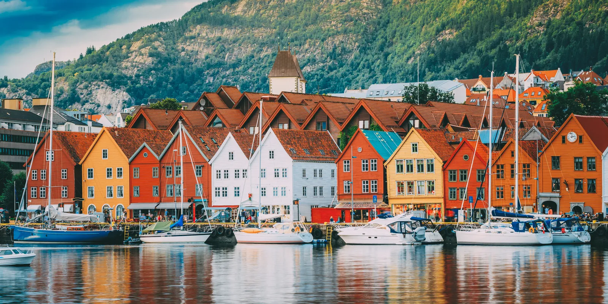
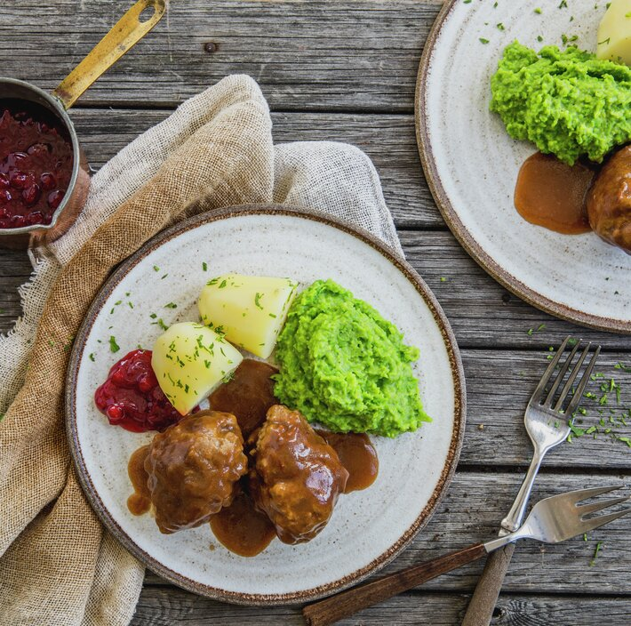
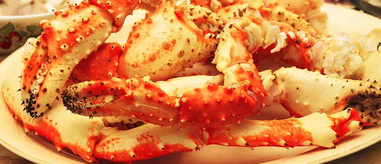

Comida en Noruega
La dieta tradicional noruega ha sido moldeada por la disponibilidad de
ingredientes locales, como pescado, mariscos, carne de caza, bayas y raíces.
Durante siglos, el pueblo noruego ha dependido de la pesca y la agricultura
para su sustento, lo que se refleja en muchos de sus platos tradicionales.

Kjottkaker

Estas son las albóndigas de carne de ternera picada y frita que se suele acompañar con puré de guisantes y
patatas cocidas. Tienen un cierto parecido a las que nos podemos encontrar en otros países nórdicos.
Salmón

Es el rey de la gastronomía noruega. Se puede tomar para desayunar, a media mañana, para comer, merendar o
cenar. Encaja con todo tipo de platos. El más común es el salmón ahumado, aunque también hay otras variedades
el gravlaks, donde el salmón es curado con sal y azúcar y está sazonado con eneldo u otras hierbas.
King crabs

También llamados como cangrejo real del ártico, estos enormes cangrejos son uno de los manjares del
norte de Noruega. De hecho, en la región de Honningsvåg hasta se realizan safaris para que tú mismo puedas
pescarlo en el mar y llevártelo a la mesa. De él se disfrutan sobre todo sus patas y pinzas, ya que el
interior de su caparazón está prácticamente vacío. En Noruega hay muy buen marisco.